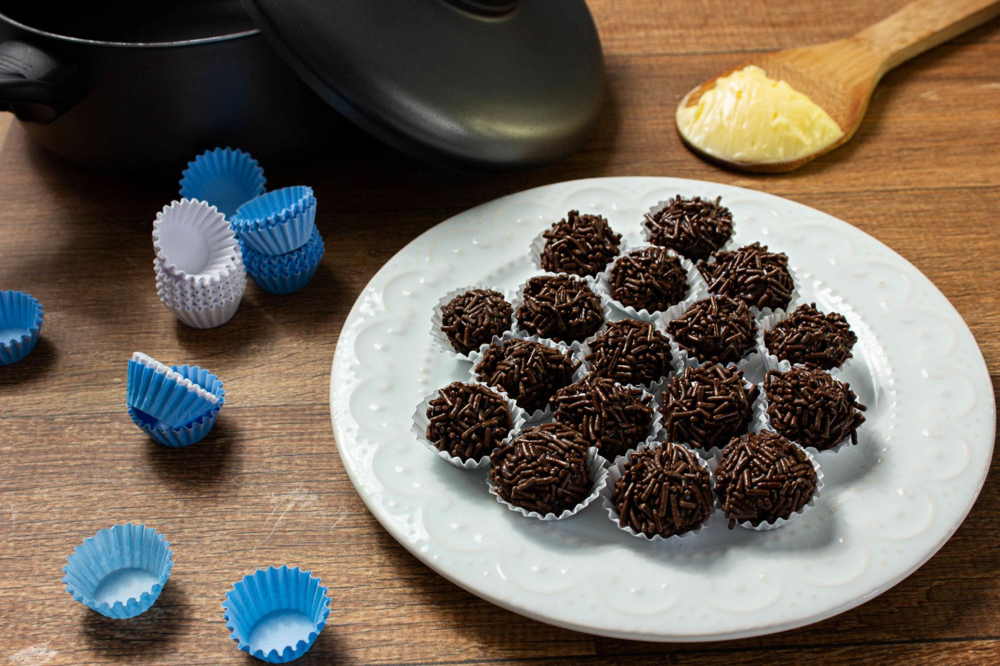

Description
Brigadeiro is one of the most popular desserts in Brazil. These soft chocolate truffles are made with condensed milk, cocoa powder, butter, and chocolate sprinkles. Brigadeiros are commonly served at birthday parties and family celebrations.
Ingredients
- 1 can sweetened condensed milk
- 2 tablespoons cocoa powder
- 1 tablespoon butter
- Chocolate sprinkles
Steps
- Add the condensed milk, cocoa powder, and butter to a saucepan.
- Cook over medium heat while stirring constantly.
- Continue stirring until the mixture becomes thick and starts pulling away from the pan.
- Let the mixture cool completely.
- Grease your hands with butter and roll the mixture into small balls.
- Cover the brigadeiros with chocolate sprinkles.
- Serve and enjoy.